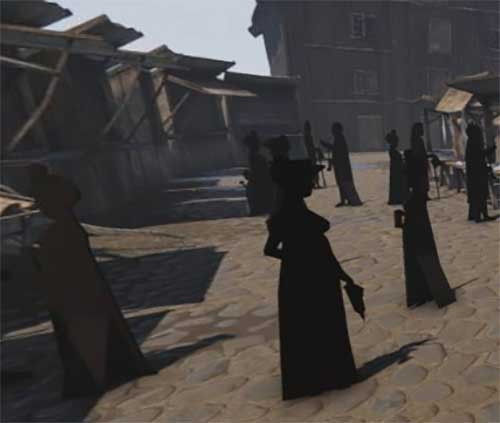

Hva går undervisningsopplegget ut på?
Møter kompetansemål
I historie etter 7ende trinn: «gjere greie for sentrale trekk ved tidsepokane mellomalder, renessanse og opplysningstid i Europa og diskutere grunnar til denne tidsinndelinga» (se Læreplan i samfunnsfag (SAF1-03) - kompetansemål etter 7ende årssted )
Tverrfaglighet
Dette undervisningsopplegget trekker også på ferdigheter innen realfag og kunstfag
Silhuetter og opplysningstiden
Silhuetter, altså svarte profiler på lys bakgrunn, var 1700- og tidlig 1800-tallets «foto». De var raske å lage, og man trengte ikke noen særlige kunstneriske evner eller ferdigheter. I motsetning til malte portretter kunne silhuettene lages av hvemsomhelst. De kunne også være små slik at man kunne ta med seg bilder av sine kjære om man var på reise eller langt borte fra hverandre.
Man finner silhuetter i kunsten tilbake til antikken, men disse var håndtegnet og krevde kyndige og kunstneriske ferdigheter. I siste halvdel av 1700-tallet og de første tiårene av 1800-tallet kom det til redskap som gjorde det enklere og raskere å lage silhuetter. Redskapene var enkle – en ramme med glass som ble festet til en stol, og en lyskilde. Mellom disse plasserte man personen, i profil, og så blåse man ut alt lys annet enn den ene lyskilden. På arket så man da profilen til personen. Profilen var rask og enkel å streke opp med blyant.
Etterpå fylte man inn profilen med svart blekk eller maling, og klippet den ut med en god, spiss saks. Denne ble så limt på en lys bakgrunn.
Profilen kunne enkelt kopieres enten ved at man tegnet den av på en blikkplate som man så klippet ut og brukte som trykkplate, eller med en ?? En ?? var en «arm» som det var festet flere skriveverktøy på. Ved å følge oppstrekingen av profilen tegnet disse opp de nøyaktig samme. Denne kunne også brukes til å lage profilene mindre.
Redskapene som gjorde silhuettene raske og enkle å lage bygget på kunnskaper om lys, perspektiv og symmetri. Dette var kunnskaper som sammen med andre vitenskapelige fremskritt ble spredd i Europa på 1600- og 1700-tallet. På grunn av utviklingen og spredningen av kunnskap kalles denne perioden for Opplysningstiden.
Mange tegnet eller malte også bakgrunner eller klær til silhuettene. Slik ble de satt inn i mer fargerike og detaljerte omgivelser. Dette var likevel ikke nok til at de overlevde inn i moderne tid. Silhuetter gikk av moten da kameraet kom på 1840-tallet. Den svarte profilen klarte ikke konkurrere med detaljene i fotografiet.
Oppgaver
Du trenger:
Tegn av silhuetten. Fyll den inn med svart maling. Klipp forsiktig ut.
Har dere tid, lag gjerne flere silhuetter som dere setter sammen til å fortelle en historie.
Vil du lese mer om silhuetter? Se mer på forskning.no
Silhuetter i norske museer norske museer.